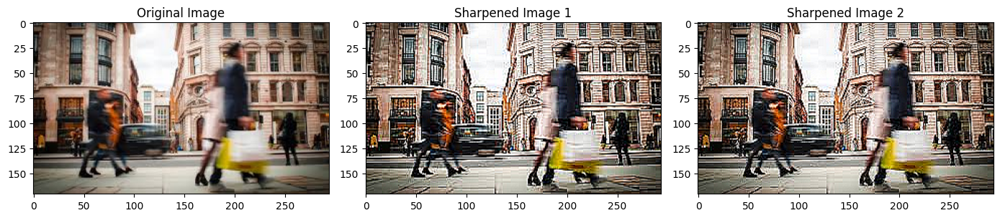
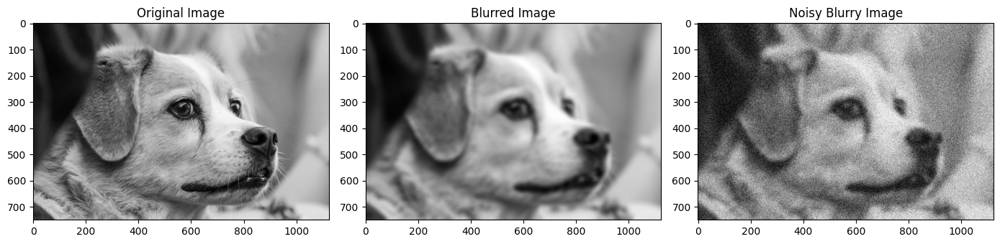
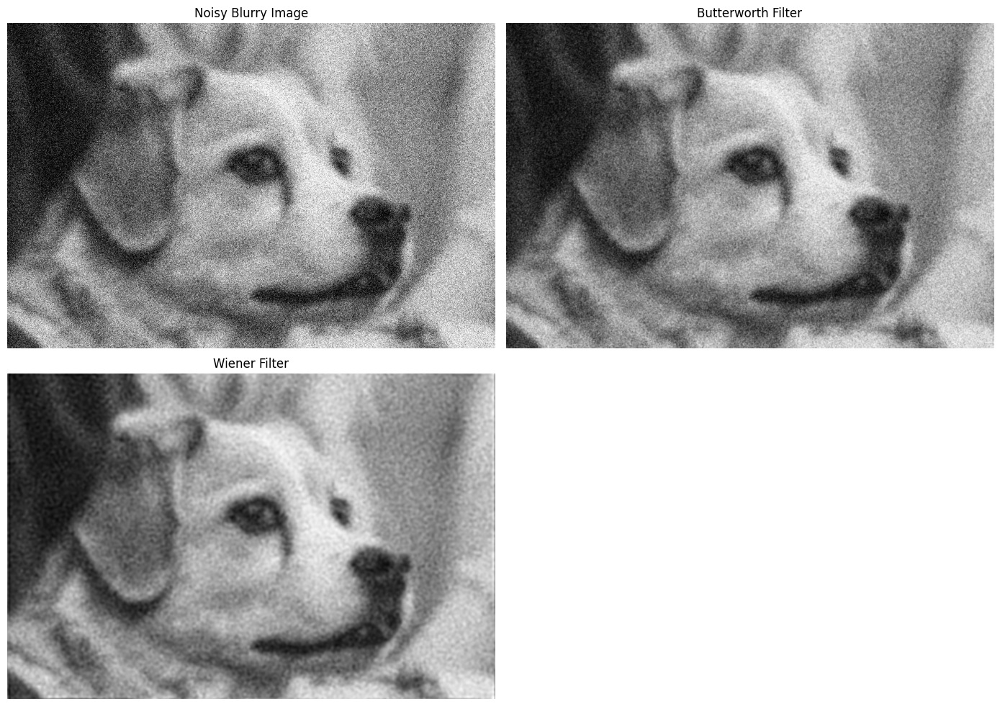
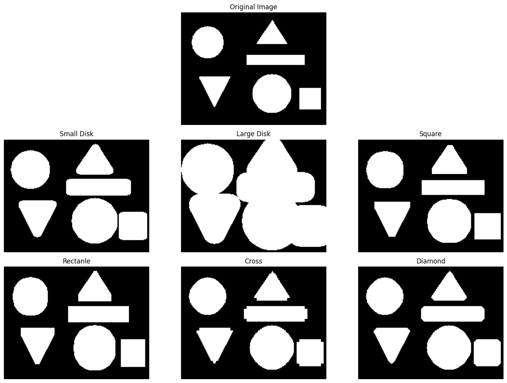
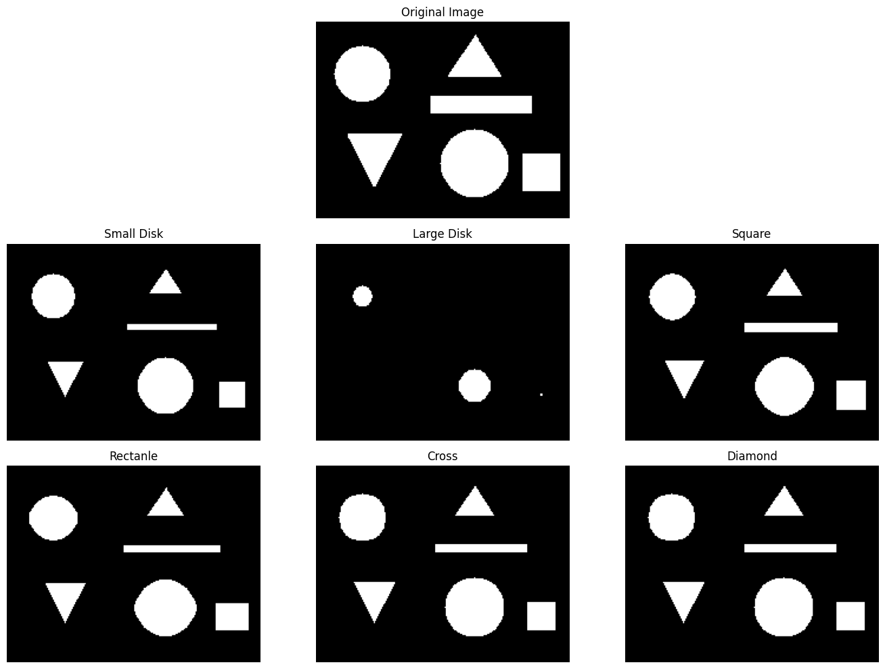
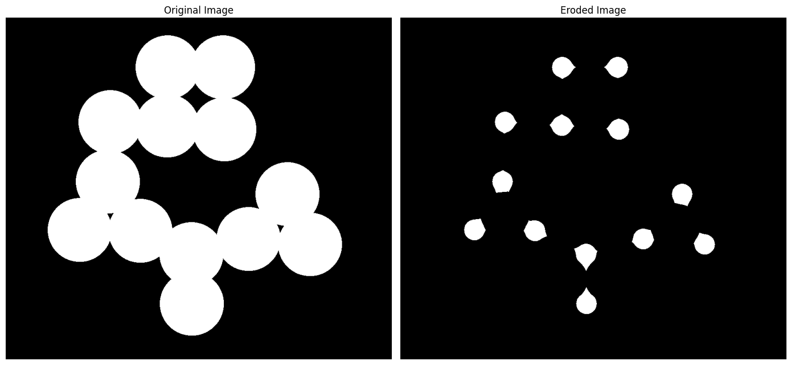
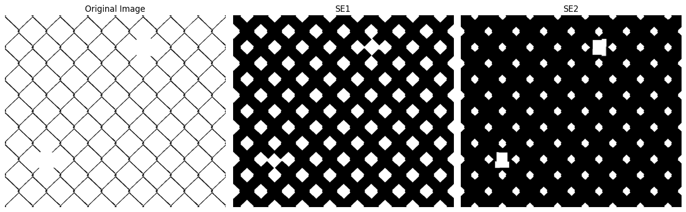
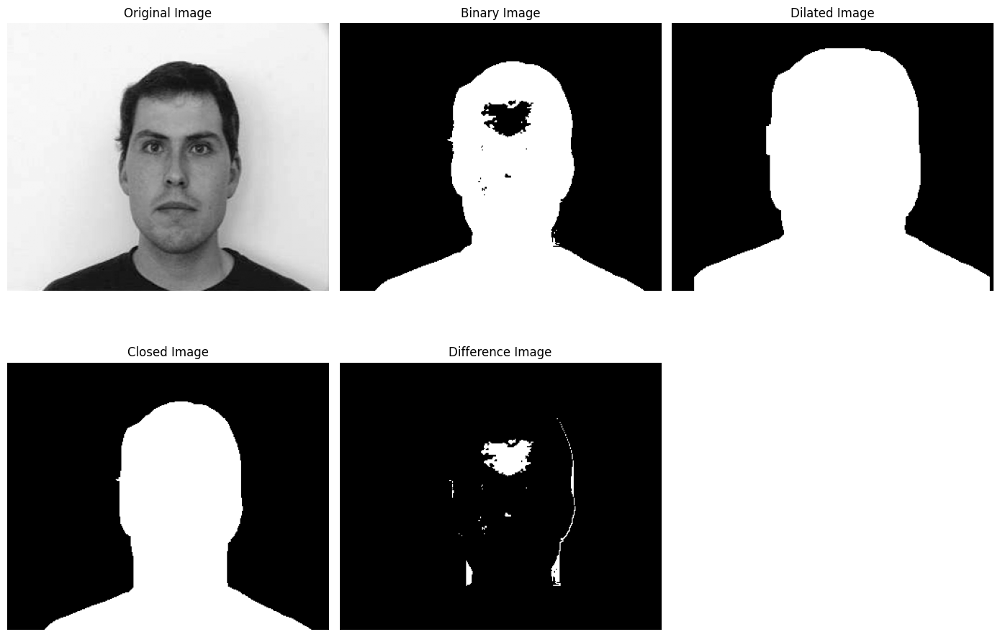
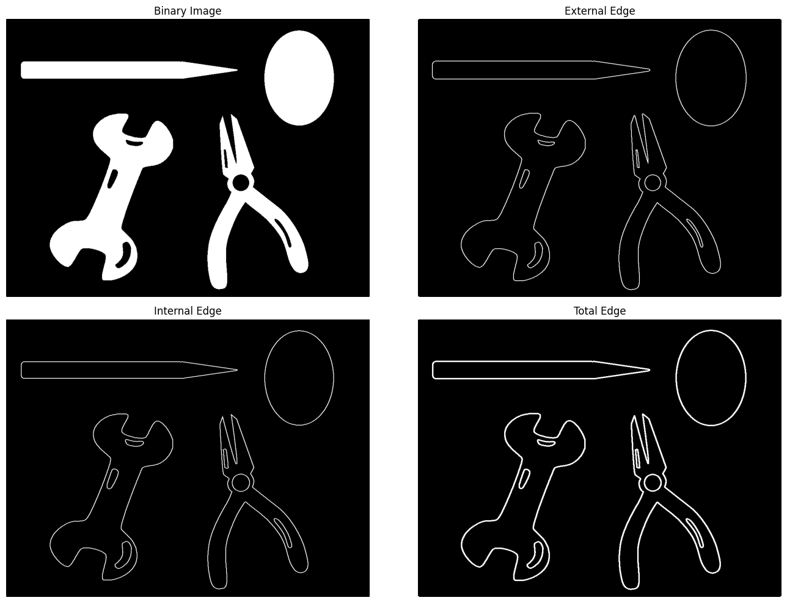
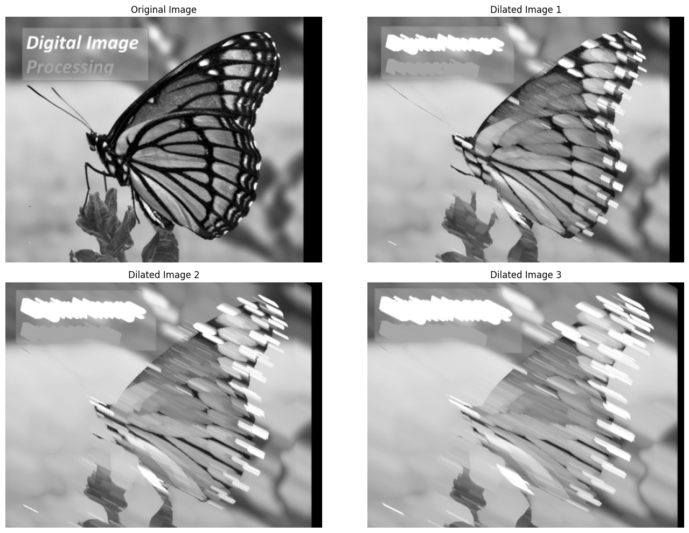

# connect GG Drive
from google.colab import drive
drive.mount('/content/drive')Mounted at /content/driveMounted at /content/drive#Ex6_1: Image Sharpening
Img = cv2.imread(PATH + 'blurring.jpg', cv2.IMREAD_COLOR_RGB)
# Create two simple filter for image sharpening
# Search: image filter sharping matrix
h1 = np.array([[-1, -1, -1], [-1, 10, -1], [-1, -1, -1]], dtype=np.float64) / 2
h2 = np.array([[0, -1, 0], [-1, 5, -1], [0, -1, 0]], dtype=np.float64)
# apply two filters to the original image
Img_sharpened1 = cv2.filter2D(Img, -1, h1, borderType=cv2.BORDER_REPLICATE)
Img_sharpened2 = cv2.filter2D(Img, -1, h2, borderType=cv2.BORDER_REPLICATE)
# display results
plt.figure(figsize=(14, 10))
plt.subplot(1,3,1), plt.imshow(Img), plt.title('Original Image', fontsize=FS)
plt.subplot(1,3,2), plt.imshow(Img_sharpened1), plt.title('Sharpened Image 1', fontsize=FS)
plt.subplot(1,3,3), plt.imshow(Img_sharpened2), plt.title('Sharpened Image 2', fontsize=FS)
plt.tight_layout()
plt.savefig(PATH + 'Ex6_1.jpg', dpi=400)
plt.show()
This cell, labeled ‘Ex6_1: Image Sharpening’, demonstrates image sharpening using convolution with two different sharpening kernels.
blurring.jpg from the specified PATH.h1 and h2 are 3x3 matrices (kernels) designed to enhance edges and details when convolved with an image. h1 includes a division by 2 to prevent over-sharpening.cv2.filter2D() applies each kernel to the original image (Img) to produce Img_sharpened1 and Img_sharpened2. The -1 argument indicates that the output image will have the same depth as the source. borderType=cv2.BORDER_REPLICATE handles pixels at the image borders.matplotlib to display the original image alongside the two sharpened versions for visual comparison. plt.tight_layout() adjusts plot parameters for a tight layout.#Ex 6_2: Image Restoration using Butterworth and Wiener filters
from scipy.signal import butter, wiener
from scipy.signal import convolve2d as con2d
from skimage.restoration import wiener
from skimage.util import random_noise
# load image
Img = cv2.imread(PATH + 'puppy.jpeg', cv2.IMREAD_COLOR_RGB)
# convert from RGB to GRAYSCALE, then normalize to double format (0.0000 -> 1.0000)
Img = cv2.cvtColor(Img, cv2.COLOR_RGB2GRAY).astype(np.float32) / 255.0
#make the original image blurry the noisy
#stage 1: blurry image with LENGTH, ANGLE = 21, 10
blurry_Img = cv2.GaussianBlur(Img, (21, 21), 10)
#stage 2: noisy blurry image
noise_mean, noise_var = 0, 0.04
noisy_blurry_Img = random_noise(blurry_Img, mode='gaussian', mean=noise_mean, var=noise_var)
noisy_blurry_Img = np.clip(noisy_blurry_Img, 0.0, 1.0)
# calculate the Mean Square Error (MSE) between the original image and the noisy blurry image
def MSE(img1, img2):
return np.mean((img1 - img2) ** 2)
mse1 = MSE(Img, noisy_blurry_Img)
print(f'MSE between the original image and noisy blurry image: {mse1}')
# display results
plt.figure(figsize=(14, 10))
plt.subplot(1,3,1), plt.imshow(Img, cmap='gray'), plt.title('Original Image', fontsize=FS)
plt.subplot(1,3,2), plt.imshow(blurry_Img, cmap='gray'), plt.title('Blurred Image', fontsize=FS)
plt.subplot(1,3,3), plt.imshow(noisy_blurry_Img, cmap='gray'), plt.title('Noisy Blurry Image', fontsize=FS)
plt.tight_layout()
plt.savefig(PATH + 'Ex6_2a.jpg', dpi=400)
plt.show()MSE between the original image and noisy blurry image: 0.03675114098282887
This cell, labeled ‘Ex 6_2: Image Restoration using Butterworth and Wiener filters’, prepares an image by blurring it and adding noise, then defines a function to calculate Mean Squared Error (MSE).
butter, wiener (from scipy.signal and skimage.restoration), convolve2d, and random_noise.puppy.jpeg, converts it to grayscale, and normalizes pixel values to a float range [0.0, 1.0].cv2.GaussianBlur) to create blurry_Img.random_noise() to create noisy_blurry_Img. The np.clip() function ensures pixel values remain within the valid range.MSE(img1, img2) to calculate the Mean Squared Error between two images, providing a quantitative measure of similarity.noisy_blurry_Img.matplotlib to visualize the degradation.
# Restoration process
plt.figure(figsize=(14, 10))
plt.subplot(2,2,1), plt.imshow(noisy_blurry_Img, cmap='gray'), plt.title('Noisy Blurry Image', fontsize=FS), plt.axis('off')
# a. using Butterworth filter
# design a 1-D Butterworth low-pass filter (LPF)
order = 3 # order = 2-4: usually enough, higher orders can cause ringing artifacts.
# Choose an order based on:
#1. removes most of th grain
#2. still keeps edges (lines, contours...) reasonably sharp
cutoff = 0.12 # normalized cutoff (0->1, 1 => Nyquist)
# for heavy noise:
# 1. Lower cutoff (0.05-0.10): stronger denoising, but more blur
# 2. Higher cutoff (0.15-0.25): keep edges, but leaves some noise
b, a = butter(order, cutoff, btype='low', analog=False)
# turn numerator coefficients into a small separable 2-D kernel
kernel_1d = b / np.sum(b) #normalize
kernel_2d = np.outer(kernel_1d, kernel_1d) #outer product
# apply via 2-D convolution
Img_butter = con2d(noisy_blurry_Img, kernel_2d, mode='same', boundary='symm')
Img_butter = np.clip(Img_butter, 0.0, 1.0)
plt.subplot(2,2,2), plt.imshow(Img_butter, cmap='gray'), plt.title('Butterworth Filter', fontsize=FS), plt.axis('off')
mse2 = MSE(Img, Img_butter)
print(f'MSE between the original image and the filtered image: {mse2}')
# b. using Wiener filter
psf_size = 7
sigma = 5
x = np.linspace(-(psf_size // 2), psf_size // 2, psf_size)
X, Y = np.meshgrid(x, x)
psf = np.exp(-(X**2 + Y**2) / (2 * sigma**2))
psf = psf / np.sum(psf)
# apply Wiener filter to the noise blurry image
Img_wiener = wiener(noisy_blurry_Img, psf, balance=5.1, clip=True)
plt.subplot(2,2,3), plt.imshow(Img_wiener, cmap='gray'), plt.title('Wiener Filter', fontsize=FS), plt.axis('off')
mse3 = MSE(Img, Img_wiener)
print(f'MSE between the original image and the filtered image: {mse3}')
plt.tight_layout()
plt.savefig(PATH + 'Ex6_2b.jpg', dpi=400)
plt.show()MSE between the original image and the filtered image: 0.005965720060000522
MSE between the original image and the filtered image: 0.0037195802941330696
This cell continues ‘Ex 6_2’ by demonstrating image restoration using Butterworth and Wiener filters.
noisy_blurry_Img as a reference.butter() with specified order and cutoff frequency. This filter is known for its smooth frequency response.noisy_blurry_Img using con2d (2-D convolution) to produce Img_butter. np.clip() is used to keep pixel values within [0.0, 1.0].wiener() function from skimage.restoration is applied to the noisy_blurry_Img along with the PSF to produce Img_wiener. The balance parameter controls the trade-off between noise reduction and deblurring.This cell effectively compares the restoration capabilities of two different filtering techniques.
#Ex6_3: Dilation with different SEs
Img = cv2.imread(PATH + 'binary_objects.jpg', cv2.IMREAD_GRAYSCALE)
# convert from grayscal to binary
_, Img = cv2.threshold(Img, 127, 255, cv2.THRESH_BINARY)
# perform the dilation
# a. small disk with radius = 5
se1 = cv2.getStructuringElement(cv2.MORPH_ELLIPSE, (11, 11))
bw1 = cv2.dilate(Img, se1)
# b. large disk with radius = 15
se2 = cv2.getStructuringElement(cv2.MORPH_ELLIPSE, (31, 31))
bw2 = cv2.dilate(Img, se2)
# c. square with side = 8
se3 = cv2.getStructuringElement(cv2.MORPH_RECT, (8, 8))
bw3 = cv2.dilate(Img, se3)
# d. rectanle with 2 sides = 5x10
se4 = cv2.getStructuringElement(cv2.MORPH_RECT, (5, 10))
bw4 = cv2.dilate(Img, se4)
# e. cross with radius = 4
se5 = cv2.getStructuringElement(cv2.MORPH_CROSS, (9, 9))
bw5 = cv2.dilate(Img, se5)
# f. diamond with radius = 4
se6 = cv2.getStructuringElement(cv2.MORPH_DIAMOND, (9, 9))
bw6 = cv2.dilate(Img, se6)
# display results
plt.figure(figsize=(14, 10))
plt.subplot(3,3,2), plt.imshow(Img, cmap='gray'), plt.title('Original Image', fontsize=FS), plt.axis('off')
plt.subplot(3,3,4), plt.imshow(bw1, cmap='gray'), plt.title('Small Disk', fontsize=FS), plt.axis('off')
plt.subplot(3,3,5), plt.imshow(bw2, cmap='gray'), plt.title('Large Disk', fontsize=FS), plt.axis('off')
plt.subplot(3,3,6), plt.imshow(bw3, cmap='gray'), plt.title('Square', fontsize=FS), plt.axis('off')
plt.subplot(3,3,7), plt.imshow(bw4, cmap='gray'), plt.title('Rectanle', fontsize=FS), plt.axis('off')
plt.subplot(3,3,8), plt.imshow(bw5, cmap='gray'), plt.title('Cross', fontsize=FS), plt.axis('off')
plt.subplot(3,3,9), plt.imshow(bw6, cmap='gray'), plt.title('Diamond', fontsize=FS), plt.axis('off')
plt.tight_layout()
plt.savefig(PATH + 'Ex6_3.jpg', dpi=400)
plt.show()
This cell, ‘Ex6_3: Dilation with different SEs’, demonstrates the morphological operation of dilation using various structuring elements (SEs).
binary_objects.jpg in grayscale and converts it to a binary image using a threshold.cv2.getStructuringElement() with different shapes (ellipse, rectangle, cross, diamond) and sizes:
se1: Small ellipse (disk).se2: Large ellipse (disk).se3: Square.se4: Rectangle.se5: Cross.se6: Diamond.cv2.dilate() applies each SE to the binary image, expanding the white (foreground) regions.#Ex6_4: Erosion with different SEs
Img = cv2.imread(PATH + 'binary_objects.jpg', cv2.IMREAD_GRAYSCALE)
# convert from grayscal to binary
_, Img = cv2.threshold(Img, 127, 255, cv2.THRESH_BINARY)
# perform the dilation
# a. small disk with radius = 5
se1 = cv2.getStructuringElement(cv2.MORPH_ELLIPSE, (11, 11))
bw1 = cv2.erode(Img, se1)
# b. large disk with radius = 15
se2 = cv2.getStructuringElement(cv2.MORPH_ELLIPSE, (31, 31))
bw2 = cv2.erode(Img, se2)
# c. square with side = 8
se3 = cv2.getStructuringElement(cv2.MORPH_RECT, (8, 8))
bw3 = cv2.erode(Img, se3)
# d. rectanle with 2 sides = 5x10
se4 = cv2.getStructuringElement(cv2.MORPH_RECT, (5, 10))
bw4 = cv2.erode(Img, se4)
# e. cross with radius = 4
se5 = cv2.getStructuringElement(cv2.MORPH_CROSS, (9, 9))
bw5 = cv2.erode(Img, se5)
# f. diamond with radius = 4
se6 = cv2.getStructuringElement(cv2.MORPH_DIAMOND, (9, 9))
bw6 = cv2.erode(Img, se6)
# display results
plt.figure(figsize=(14, 10))
plt.subplot(3,3,2), plt.imshow(Img, cmap='gray'), plt.title('Original Image', fontsize=FS), plt.axis('off')
plt.subplot(3,3,4), plt.imshow(bw1, cmap='gray'), plt.title('Small Disk', fontsize=FS), plt.axis('off')
plt.subplot(3,3,5), plt.imshow(bw2, cmap='gray'), plt.title('Large Disk', fontsize=FS), plt.axis('off')
plt.subplot(3,3,6), plt.imshow(bw3, cmap='gray'), plt.title('Square', fontsize=FS), plt.axis('off')
plt.subplot(3,3,7), plt.imshow(bw4, cmap='gray'), plt.title('Rectanle', fontsize=FS), plt.axis('off')
plt.subplot(3,3,8), plt.imshow(bw5, cmap='gray'), plt.title('Cross', fontsize=FS), plt.axis('off')
plt.subplot(3,3,9), plt.imshow(bw6, cmap='gray'), plt.title('Diamond', fontsize=FS), plt.axis('off')
plt.tight_layout()
plt.show()
This cell, also labeled ‘Ex6_4: Erosion with different SEs’, demonstrates the morphological operation of erosion, which is the counterpart to dilation.
binary_objects.jpg and converts it to a binary image.cv2.erode() applies each SE to the binary image, shrinking the white (foreground) regions and removing small objects or bridges.# Ex6_5: Cirle counting with Erosion
Img = cv2.imread(PATH + 'circles.png', cv2.IMREAD_GRAYSCALE)
# convert from GRAYSCALE to BINARY
_, Img = cv2.threshold(Img, 127, 255, cv2.THRESH_BINARY)
# count the number of circles before erosion
num_circles, _ = cv2.connectedComponents(Img, connectivity=4)
print(f'Number of circles before erosion: {num_circles - 1}')
# perform erosion
# create a disk SE with radius = 50
se = cv2.getStructuringElement(cv2.MORPH_ELLIPSE, (101, 101))
# perform the erosion
bw = cv2.erode(Img, se)
# count the number of circles after erosion
num_circles, _ = cv2.connectedComponents(bw, connectivity=4)
print(f'Number of circles after erosion: {num_circles - 1}')
#display results
plt.figure(figsize=(14, 10))
plt.subplot(1,2,1), plt.imshow(Img, cmap='gray'), plt.title('Original Image', fontsize=FS), plt.axis('off')
plt.subplot(1,2,2), plt.imshow(bw, cmap='gray'), plt.title('Eroded Image', fontsize=FS), plt.axis('off')
plt.tight_layout()
plt.show()Number of circles before erosion: 1
Number of circles after erosion: 13
This cell, ‘Ex6_5: Circle counting with Erosion’, demonstrates how erosion can be used to separate and count objects.
circles.png in grayscale and converts it to a binary image.cv2.connectedComponents() is used to count connected components (potential circles) before erosion. The -1 is to exclude the background component.se) with a radius of 50 (resulting in a 101x101 kernel) is created. This large SE is chosen to erode away connections between objects, effectively separating them.cv2.erode() applies the large se to the binary image.cv2.connectedComponents() is used again to count the connected components after erosion. The expectation is that erosion separates overlapping or connected circles, leading to a more accurate count of individual circles.#Ex6_6: Hole detection using Erosion
Img = cv2.imread(PATH + 'fence.jpg', cv2.IMREAD_GRAYSCALE)
#convert from GRAYSCALE to BINARY
_, Img = cv2.threshold(Img, 0, 255, cv2.THRESH_BINARY_INV + cv2.THRESH_OTSU) # dua tre pho de lay nguong
Img = cv2.bitwise_not(Img) # nen trang luoi den
#use two different SEs to find out the hole(s)
#a. diamond with radius = 35
se1 = cv2.getStructuringElement(cv2.MORPH_DIAMOND, (71, 71))
bw1 = cv2.erode(Img, se1)
#b. cross with radius = 50
se2 = cv2.getStructuringElement(cv2.MORPH_CROSS, (101, 101))
bw2 = cv2.erode(Img, se2)
#display results
plt.figure(figsize=(14, 10))
plt.subplot(1,3,1), plt.imshow(Img, cmap='gray'), plt.title('Original Image', fontsize=FS), plt.axis('off')
plt.subplot(1,3,2), plt.imshow(bw1, cmap='gray'), plt.title('SE1', fontsize=FS), plt.axis('off')
plt.subplot(1,3,3), plt.imshow(bw2, cmap='gray'), plt.title('SE2', fontsize=FS), plt.axis('off')
plt.tight_layout()
plt.show()
This cell, ‘Ex6_6: Hole detection using Erosion’, illustrates how erosion can be used to detect holes or gaps within objects.
fence.jpg in grayscale and converts it to a binary image using cv2.THRESH_OTSU for automatic thresholding. cv2.THRESH_BINARY_INV inverts the threshold, making the objects white and background black. cv2.bitwise_not() is then applied to invert it back, making objects black and background white (often representing fences or structures with holes).se1: A diamond-shaped SE with a radius of 35 (71x71 kernel).se2: A cross-shaped SE with a radius of 50 (101x101 kernel).cv2.erode() applies each of these large SEs to the binary image. When applied to an image where objects are black and background is white, erosion will ‘expand’ the white areas into the black objects, effectively revealing holes or gaps that are larger than the structuring element.#Ex6_7: Hole Removal using Closing (Dilation + Erosion)
Img = cv2.imread(PATH + 'man_face.png', cv2.IMREAD_GRAYSCALE)
#convert from GRAYSCALE to BINARY
_, Img_bw = cv2.threshold(Img, 110, 255, cv2.THRESH_BINARY_INV)
#create a square with side = 30
se = cv2.getStructuringElement(cv2.MORPH_RECT, (30, 30))
#perform image closing
Img_dilated = cv2.dilate(Img_bw, se)
Img_closed = cv2.erode(Img_dilated, se)
#Img_closed = cv2.morphologyEx(Img_bw, cv2.MORPH_CLOSE, se)
#calculate the difference between Closed Image and Binary Image
#Img_diff = Img_closed - Img_bw
Img_diff = cv2.subtract(Img_closed, Img_bw)
#display results
plt.figure(figsize=(14, 10))
plt.subplot(2, 3, 1), plt.imshow(Img, cmap='gray'), plt.title('Original Image', fontsize=FS), plt.axis('off')
plt.subplot(2, 3, 2), plt.imshow(Img_bw, cmap='gray'), plt.title('Binary Image', fontsize=FS), plt.axis('off')
plt.subplot(2, 3, 3), plt.imshow(Img_dilated, cmap='gray'), plt.title('Dilated Image', fontsize=FS), plt.axis('off')
plt.subplot(2, 3, 4), plt.imshow(Img_closed, cmap='gray'), plt.title('Closed Image', fontsize=FS), plt.axis('off')
plt.subplot(2, 3, 5), plt.imshow(Img_diff, cmap='gray'), plt.title('Difference Image', fontsize=FS), plt.axis('off')
plt.tight_layout()
plt.savefig(PATH + 'Ex6_7.jpg', dpi=400)
plt.show()
This cell, ‘Ex6_7: Hole Removal using Closing (Dilation + Erosion)’, demonstrates the morphological operation of closing, which is used to fill small holes and gaps within objects while preserving their overall shape.
man_face.png in grayscale and converts it to a binary image (Img_bw) using a fixed threshold of 110 and cv2.THRESH_BINARY_INV to make the face black and holes white.se) of size 30x30 is created.Img_dilated = cv2.dilate(Img_bw, se): The image is first dilated, which fills small holes.Img_closed = cv2.erode(Img_dilated, se): The dilated image is then eroded, which restores the object’s original size but keeps the holes filled.cv2.morphologyEx(Img_bw, cv2.MORPH_CLOSE, se) shows the direct OpenCV function for closing).Img_diff = cv2.subtract(Img_closed, Img_bw) calculates the difference between the closed image and the original binary image. This difference image will highlight the areas that were filled by the closing operation (i.e., the removed holes).#Ex6_8: Edge Detection using Dilation and Erosion
Img = cv2.imread(PATH + 'cliparts.png', cv2.IMREAD_GRAYSCALE)
# Convert from GRAYSCALE to BINARY using an auto threshold
_, Img_bw = cv2.threshold(Img, 0, 255, cv2.THRESH_BINARY + cv2.THRESH_OTSU)
# Create a disk SE with radius = 2
se = cv2.getStructuringElement(cv2.MORPH_ELLIPSE, (5, 5))
# Perform image dilation and erosion
Img_dilated = cv2.dilate(Img_bw, se)
Img_eroded = cv2.erode(Img_bw, se)
# Find edges by differences
ext_edge = Img_dilated - Img_bw
int_edge = Img_bw - Img_eroded
total_edge = Img_dilated - Img_eroded
# Display results
plt.figure(figsize=(14, 10))
plt.subplot(2, 2, 1), plt.imshow(Img_bw, cmap='gray'), plt.title('Binary Image', fontsize=FS), plt.axis('off')
plt.subplot(2, 2, 2), plt.imshow(ext_edge, cmap='gray'), plt.title('External Edge', fontsize=FS), plt.axis('off')
plt.subplot(2, 2, 3), plt.imshow(int_edge, cmap='gray'), plt.title('Internal Edge', fontsize=FS), plt.axis('off')
plt.subplot(2, 2, 4), plt.imshow(total_edge, cmap='gray'), plt.title('Total Edge', fontsize=FS), plt.axis('off')
plt.tight_layout()
plt.savefig(PATH + 'Ex6_8.jpg', dpi=400)
plt.show()
#Ex6_9: Cascade dilation
Img = cv2.imread(PATH + 'butterfly.png', cv2.IMREAD_GRAYSCALE)
#convert from GRAYSCALE to BINARY
#_, Img = cv2.threshold(Img, 127, 255, cv2.THRESH_BINARY)
#define a structuring element 'line' inclined and angle 'theta' in degree
def line_se(length, angle):
size = length
kernel = np.zeros((size, size), dtype=np.uint8)
center = size // 2
theta = np.deg2rad(angle)
x1 = int(center - (length // 2) * np.cos(theta))
y1 = int(center - (length // 2) * np.sin(theta))
x2 = int(center + (length // 2) * np.cos(theta))
y2 = int(center + (length // 2) * np.sin(theta))
cv2.line(kernel, (x1, y1), (x2, y2), 1, 1)
return kernel
#create a line SE with length = 11, anfle =30
se = line_se(11, 30)
#perform the dilation
Img_dil1 = cv2.dilate(Img, se)
Img_dil2 = cv2.dilate(Img_dil1, se)
Img_dil3 = cv2.dilate(Img_dil2, se)
#display results
plt.figure(figsize=(14, 10))
plt.subplot(2,2,1), plt.imshow(Img, cmap='gray'), plt.title('Original Image', fontsize=FS), plt.axis('off')
plt.subplot(2,2,2), plt.imshow(Img_dil1, cmap='gray'), plt.title('Dilated Image 1', fontsize=FS), plt.axis('off')
plt.subplot(2,2,3), plt.imshow(Img_dil2, cmap='gray'), plt.title('Dilated Image 2', fontsize=FS), plt.axis('off')
plt.subplot(2,2,4), plt.imshow(Img_dil3, cmap='gray'), plt.title('Dilated Image 3', fontsize=FS), plt.axis('off')
plt.tight_layout()
plt.show()